Todo lo que hay que hacer en el reloj, en la notebook y en celtuc.scripthouse.com.ar para que la sucursal quede fichando sola. Paso a paso, en el orden en que conviene hacerlo.
Este manual arranca en la Parte 0, que es lo que se prepara antes de ir. Si llegás a la sucursal sin el ejecutable del agente y sin acceso a CelTuc, no se puede terminar la instalación.
Tiempo estimado en la sucursal: 45 a 90 minutos, según cuántos empleados haya que registrar en el reloj.
Reloj Hikvision DS-K1A340WX Versión del manual: agosto 2026 · Agente 1.0.0
El orden importa: el reloj tiene que estar en la red y con IP fija antes de crearlo en CelTuc, y el agente de la notebook necesita el token que CelTuc genera recién en la Parte 2.
config.toml con el token.El reloj vive en la red interna de la sucursal y nunca se publica a Internet. La notebook lo consulta cada 20 segundos por la red local y manda las fichadas a CelTuc. Todo el tráfico sale de la notebook hacia afuera: no hay que abrir ningún puerto en el router.
Reloj Hikvision ──(red local)──▶ Notebook con el agente ──(HTTPS)──▶ celtuc.scripthouse.com.ar
Esto se prepara una sola vez y sirve para todas las sucursales.
Armá una carpeta llamada InstalarAgente con estos dos archivos:
| Archivo | De dónde sale |
|---|---|
hikvision-agent.exe |
Del proyecto CelTuc, en hikvision-agent\dist\hikvision-agent.exe (pesa unos 13 MB).
Si esa carpeta no existe o el archivo está viejo, se genera de nuevo (ver abajo). |
install_task.ps1 |
Del proyecto CelTuc, en hikvision-agent\scripts\install_task.ps1. |
El tercer archivo, config.toml, todavía no existe: lo
genera CelTuc en la Parte 2, cuando crees el agente. Se descarga ahí y se
copia a esta misma carpeta.
En tu máquina de desarrollo, parado en la carpeta hikvision-agent,
en PowerShell:
PS> powershell -ExecutionPolicy Bypass -File scripts\build_exe.ps1
Tarda unos minutos y deja el archivo en dist\hikvision-agent.exe.
Hacelo si tocaste el código del agente desde la última vez.
No lleves un config.toml de otra sucursal «para adaptarlo».
Cada agente tiene un token propio y el token de otra sucursal no sirve:
el reloj va a figurar siempre desconectado y vas a perder media hora
buscando el problema en el lugar equivocado.
Objetivo de esta parte: que el reloj esté colgado, en hora, conectado al Wi-Fi y con una IP que no se le vaya a cambiar.
Enchufalo y esperá a que arranque. La primera vez pide activar el equipo y crear una contraseña de administrador.
Esa contraseña no se puede recuperar: si se pierde, el reloj se resetea de fábrica y hay que volver a cargar todos los rostros. Escribila en la ficha de la última página de este manual apenas la crees, no «después».
Usá una contraseña con mayúscula, minúscula, número y símbolo. El equipo rechaza las simples.
Esto va antes que todo lo demás. Si el reloj está en otra hora, las fichadas entran con la hora equivocada y todo el análisis de horarios queda mal — y corregirlo después es reprocesar el histórico.
Comparalo con la hora de tu celular. Tienen que coincidir al minuto.
Este equipo no toma redes de 5 GHz. Si el router publica
MiRed-2.4Ghz y MiRed-5Ghz, en la lista del
reloj va a aparecer solamente la primera. Es normal, no es una falla.
Si no aparece ninguna, entrá al router y verificá que la banda de
2,4 GHz esté habilitada.
Cuando conecte, el reloj muestra la IP que tomó, algo como
192.168.1.31. Anotala: la vas a necesitar dos veces
más adelante.
La IP que el reloj tomó es prestada. El router se la puede dar a otro equipo después de un corte de luz o de unos días. El día que eso pase, el agente va a seguir buscando el reloj en la IP vieja y la sucursal deja de sincronizar sin que nadie se entere, hasta que alguien mire el panel. Reservarla toma dos minutos ahora y evita una visita después.
Cómo se hace (los nombres cambian según la marca del router):
192.168.1.1 (o 192.168.0.1).Hikvision o ser el número de serie.
Comparalo por la MAC. La del reloj la ves en
Menú ▸ Sistema ▸ Información del equipo y tiene que
coincidir con la que muestra el router en esa fila. Dos equipos pueden
tener nombres parecidos; la MAC es única.
Desde la notebook, en el navegador, escribí la IP del reloj:
http://192.168.1.31 (con la que hayas anotado). Entrá con
el usuario admin y la contraseña del paso 2.
Significa que el reloj está en la red, con la IP correcta, y que la notebook lo alcanza. Es exactamente lo que va a hacer el agente.
Se puede hacer desde el propio reloj o desde el panel web. En el reloj:
Menú ▸ Usuario ▸ Agregar.
Por cada empleado se carga:
Después de registrar a cada uno, pedile que fiche una vez ahí mismo. Si el equipo no lo reconoce, se vuelve a tomar la cara en el momento. Es mucho más barato que enterarse mañana, cuando ya te fuiste.
Escribí en la ficha de la última página qué número le tocó a cada persona. En la Parte 4 vas a tener que decirle a CelTuc quién es quién, y con la lista a mano son dos minutos.
Acá se genera el config.toml que la notebook necesita. Sin
este paso no se puede seguir.
Abrí celtuc.scripthouse.com.ar y entrá con tu usuario superadministrador.
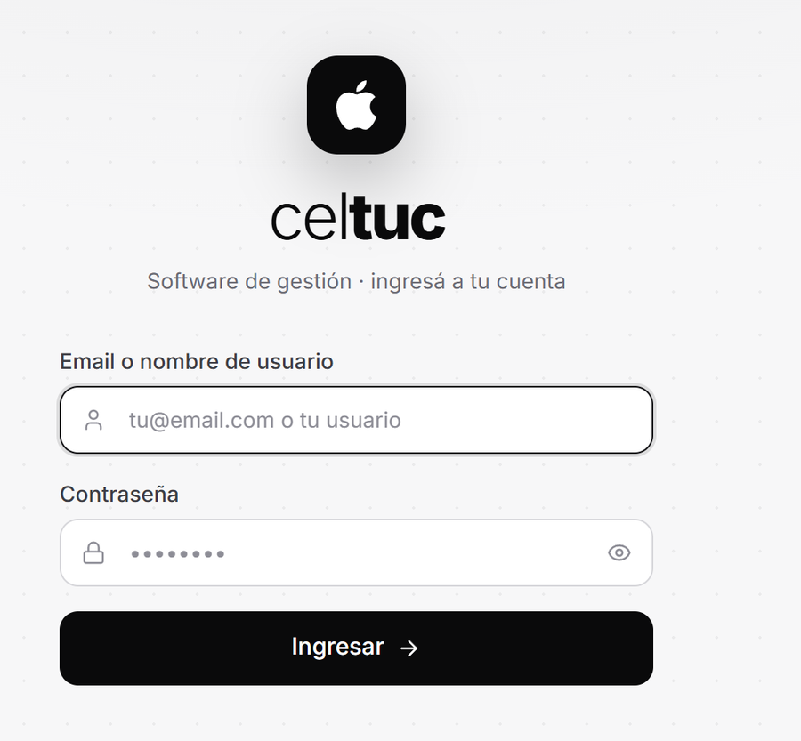
Todo el módulo Asistencia es exclusivo del superadministrador. Con un usuario administrador común, «Asistencia» ni siquiera aparece en el menú de la izquierda. Si no lo ves, estás con la cuenta equivocada.
En el menú de la izquierda, abajo de todo, Asistencia. Después, la pestaña Configuración.
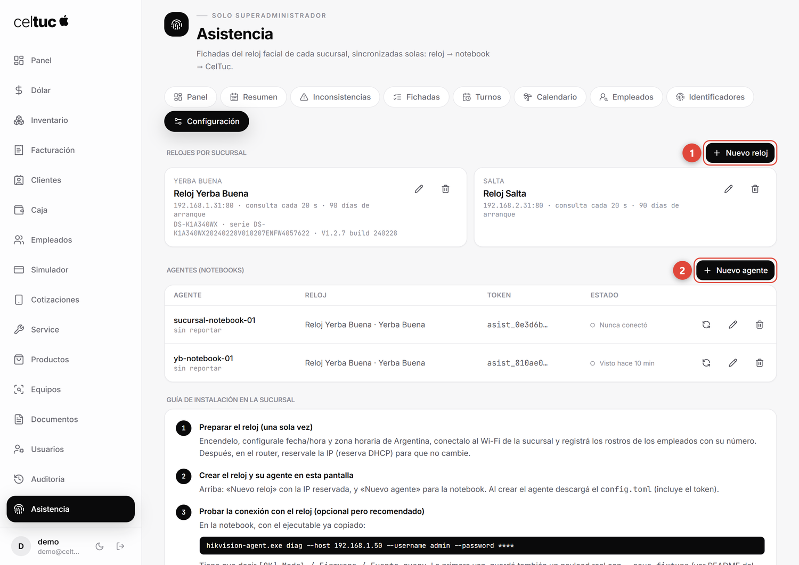
Apretá «Nuevo reloj» y completá:
| Campo | Qué poner |
|---|---|
| Sucursal | La sucursal donde lo estás instalando. Si no está en la lista, hay que crearla primero en el módulo Empleados. |
| Nombre | Algo reconocible: «Reloj Yerba Buena». Es solo para vos. |
| IP o host | La IP que reservaste en el paso 5. Este es el campo que importa. |
| Usuario ISAPI | admin, salvo que hayas creado otro usuario en el reloj. |
| Días a recuperar | Cuánto histórico traer la primera vez. 90 está bien: si el reloj ya venía usándose, trae todo lo que tenga guardado. |
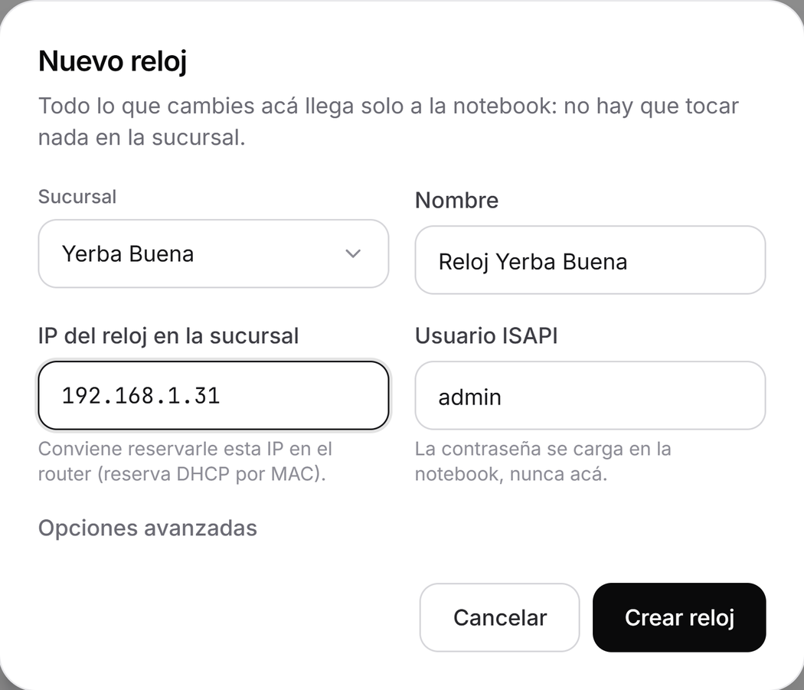
Y es a propósito: vive únicamente en la notebook, cifrada. CelTuc nunca la conoce.
config.tomlEl «agente» es el programita que va a correr en la notebook. Apretá «Nuevo agente»:
| Campo | Qué poner |
|---|---|
| Reloj que sincroniza | El que acabás de crear. |
| Nombre del agente | Identificá la máquina: yerbabuena-notebook-01. |
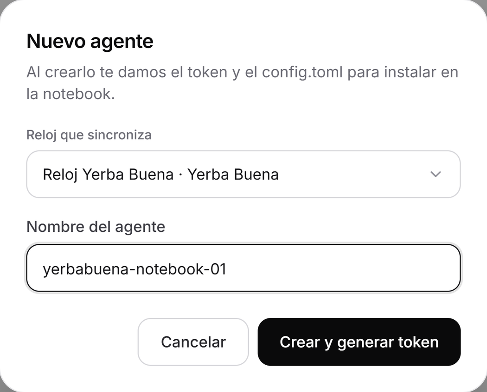
Al apretar «Crear y generar token» aparece esta pantalla:
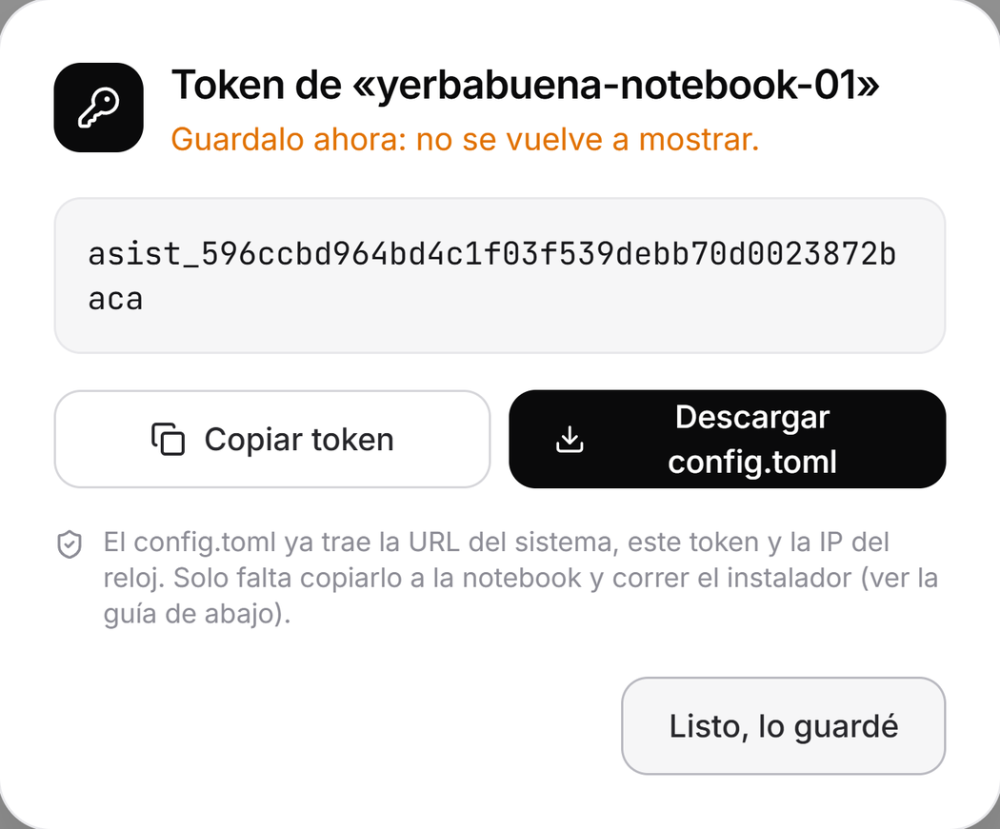
Apretá «Descargar config.toml» antes de cerrar esta ventana. Ese archivo ya trae adentro la dirección de CelTuc, la IP del reloj y el token: es todo lo que la notebook necesita.
Si cerrás sin descargarlo, el token no se puede volver a ver. No es grave — se regenera con el botón de las flechas circulares en la fila del agente — pero es un paso al pepe.
Copiá el config.toml descargado a la carpeta
InstalarAgente del pendrive, al lado del .exe.
Ahora tenés los tres archivos.
Quince minutos. La mitad es esperar.
Antes de instalar nada, dejá la máquina lista para quedarse prendida:
El agente corre como servicio del sistema: arranca con Windows aunque nadie inicie sesión, y no muestra ninguna ventana.
Copiá InstalarAgente del pendrive al escritorio de la
notebook. Adentro tienen que estar los tres archivos:
C:\Users\...\Desktop\InstalarAgente\
├── hikvision-agent.exe
├── install_task.ps1
└── config.toml ← el que bajaste en el paso 11
Este paso es opcional pero conviene: si falla, falla acá, donde el mensaje te dice exactamente qué pasa.
Abrí PowerShell, entrá a la carpeta y corré:
PS> cd $HOME\Desktop\InstalarAgente PS> .\hikvision-agent.exe diag --host 192.168.1.31 --username admin --password TU_CLAVE
Tiene que responder algo así:
[OK] Model : DS-K1A340WX [OK] Firmware : V1.2.7 build 240228 [OK] Device time: 2026-08-27T09:14:22-03:00 [OK] Events query: 128 eventos en los últimos 7 días
La notebook no lo ve en la red. Repasá el paso 6: mismo Wi-Fi, IP correcta, firewall.
La contraseña está mal escrita. Ojo con los símbolos: en PowerShell conviene encerrarla entre comillas simples.
Cerrá esa ventana y abrí PowerShell como Administrador (botón derecho sobre el ícono ▸ «Ejecutar como administrador»). Es imprescindible: sin permisos de administrador no puede registrar el servicio.
PS> cd $HOME\Desktop\InstalarAgente PS> powershell -ExecutionPolicy Bypass -File install_task.ps1
El instalador va a hacer todo solo y en el medio te va a pedir dos cosas:
| Cuando pregunte… | Qué escribir |
|---|---|
| Contraseña del reloj | La del paso 2. Queda cifrada en la notebook, atada a esa máquina. |
| Token del agente |
Escribí un guion: -El token ya viene adentro del config.toml; no hace falta cargarlo de nuevo.
|
Al terminar tiene que mostrar algo así:
[OK] Ejecutable en C:\Program Files\CelTuc\HikvisionAgent\hikvision-agent.exe [OK] Carpeta de datos C:\ProgramData\CelTuc\HikvisionAgent [OK] config.toml instalado [OK] Contraseña del reloj: guardada [..] Token del agente: no guardado (viene en config.toml) [OK] Tarea programada 'CelTuc Hikvision Agent' registrada y arrancada
Pasa cuando ya había un agente corriendo (por ejemplo, si estás reinstalando). Frenalo y volvé a correr el instalador:
PS> Stop-ScheduledTask -TaskName "CelTuc Hikvision Agent"
A partir de acá el agente arranca solo con Windows, sin ventanas y sin que nadie tenga que acordarse de nada.
No te vayas de la sucursal sin completar esta parte entera.
En CelTuc, Asistencia ▸ Panel. En uno o dos minutos la tarjeta de la sucursal tiene que pasar a «En línea».
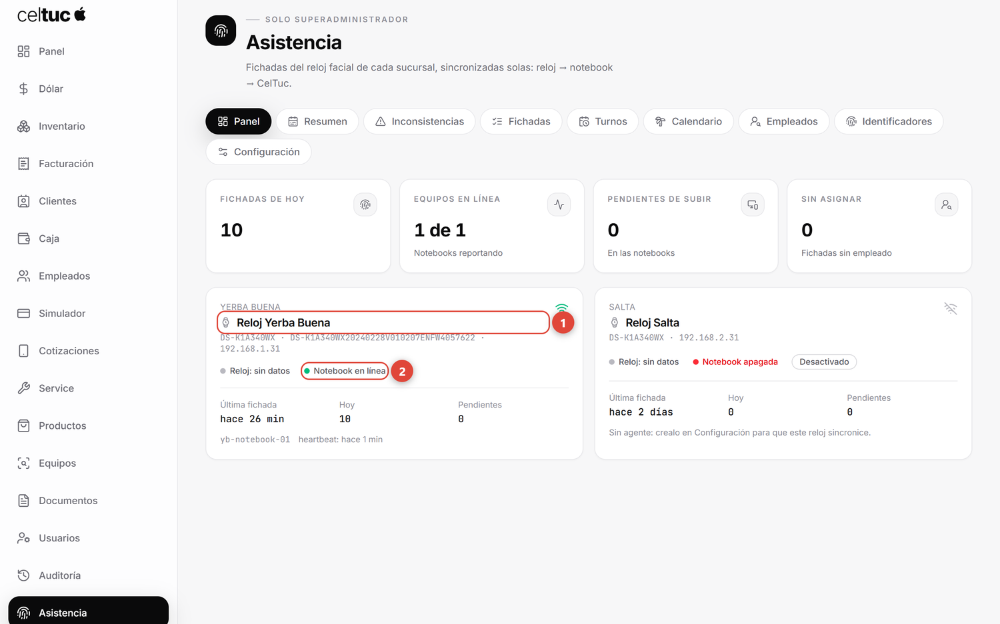
En la notebook, en PowerShell como Administrador, mirá el estado y el log:
PS> Get-ScheduledTask -TaskName "CelTuc Hikvision Agent" PS> Get-Content C:\ProgramData\CelTuc\HikvisionAgent\logs\agent.log -Tail 40
Pedile a alguien que fiche (o registrate vos). En menos de un minuto tiene que aparecer en Asistencia ▸ Fichadas.
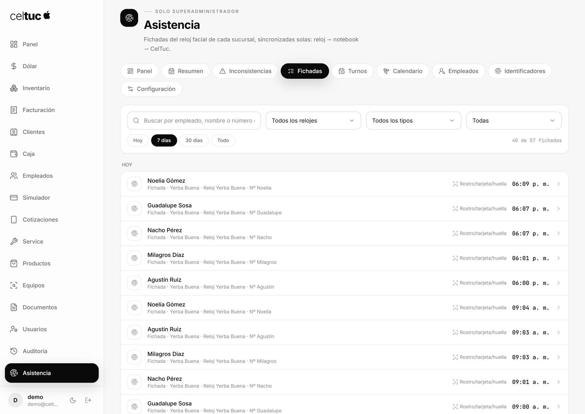
El reloj manda un número o un nombre; CelTuc necesita saber a qué empleado corresponde. Andá a Asistencia ▸ Identificadores: los que todavía no están vinculados aparecen listados para asignar.
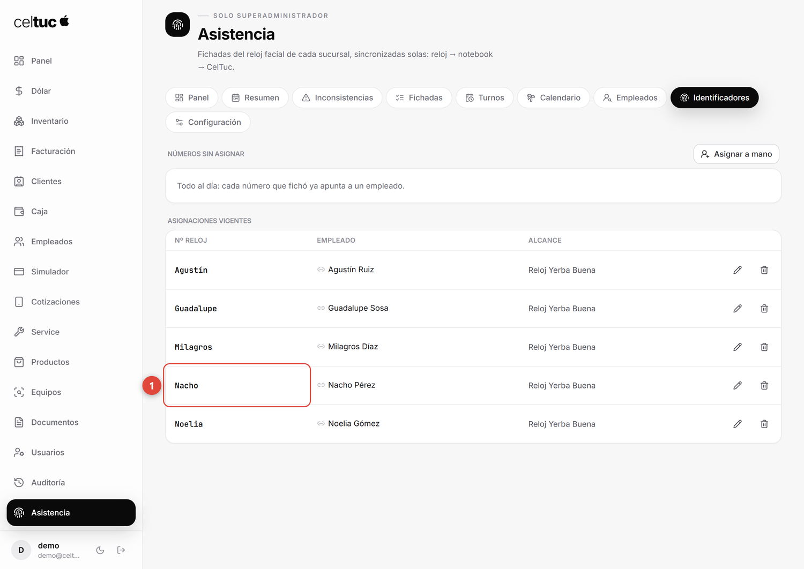
Cuando vinculás a alguien, todas sus fichadas anteriores se le reasignan automáticamente. No importa si el reloj venía usándose desde antes: no hay que rehacer nada a mano.
Todo lo anterior puede funcionar y aun así fallar el día que se corte la luz. Esta prueba es la que demuestra que la sucursal quedó en modo «prender y olvidarse». Hacela sí o sí antes de irte.
Si eso funciona, terminaste. La sucursal no necesita que nadie haga nada nunca más.
Con lo anterior las fichadas ya entran. Esto es lo que convierte una lista de horarios en información útil. No hace falta estar en la sucursal.
Asistencia ▸ Turnos. Un turno es un horario reutilizable: se crea una vez y se le asigna a varias personas.
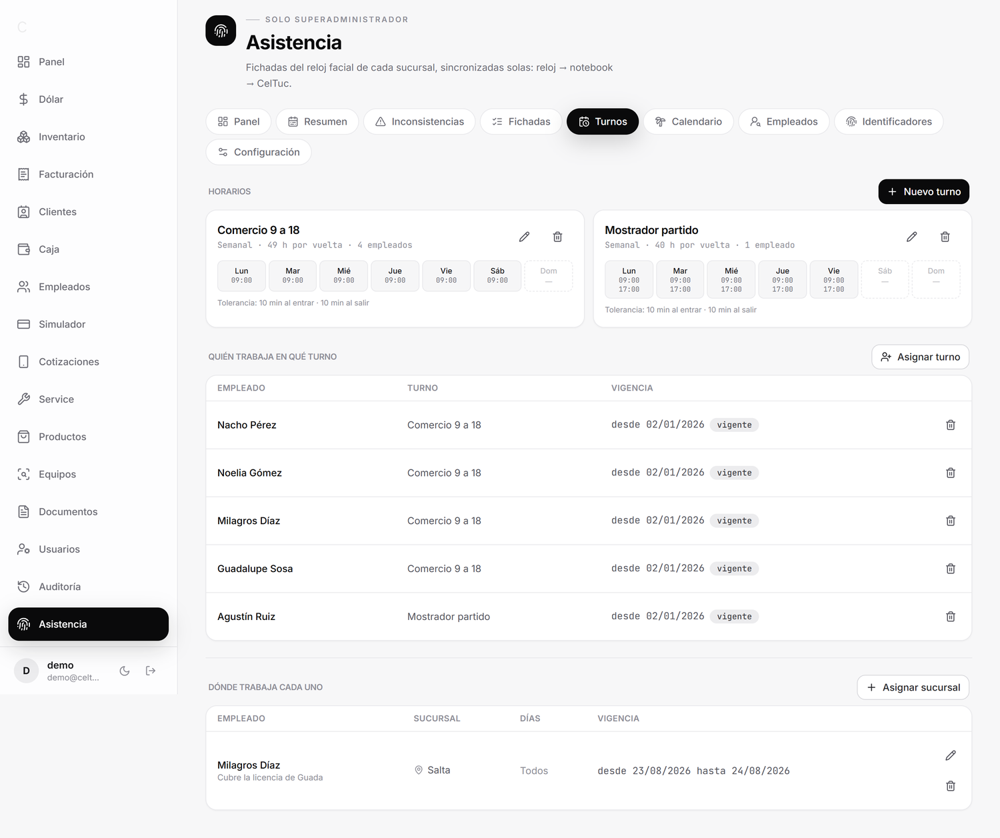
Si nadie tiene turno, las fichadas se registran igual pero no hay contra qué compararlas: el sistema no puede saber que alguien faltó.
En la misma pestaña Turnos, más abajo, «Dónde trabaja cada uno». Sirve para quien no está siempre en el mismo local.
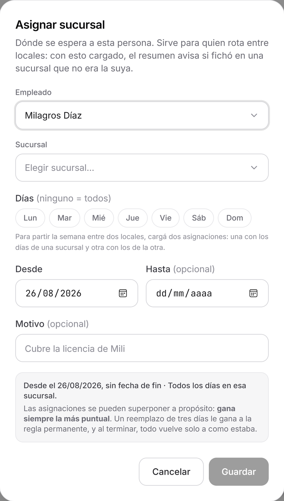
Con esto se cubren los tres casos:
Las asignaciones se pueden superponer a propósito: gana siempre la más puntual. Un reemplazo de tres días le gana a la regla permanente y, al terminar, todo vuelve a como estaba sin que tengas que acordarte de nada.
Asistencia ▸ Calendario.
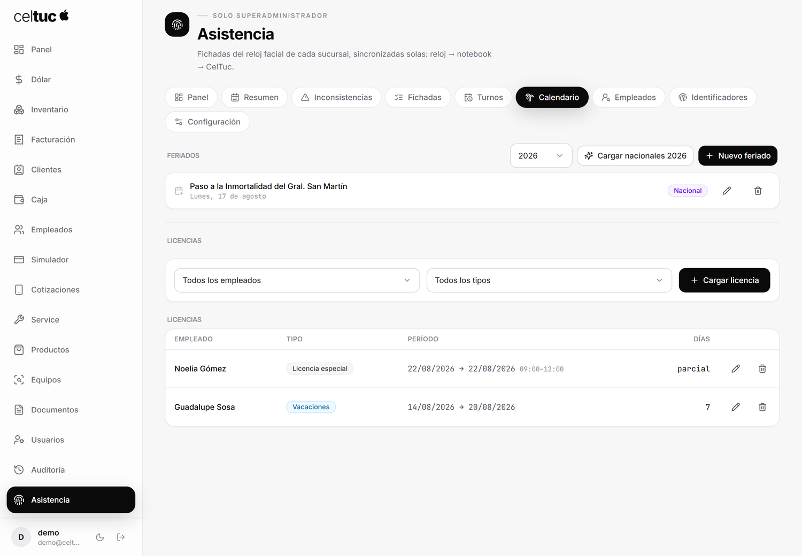
Sin feriados cargados, cada feriado aparece como una ausencia de todo el equipo. El botón «Cargar nacionales» pone de una los de fecha fija; los que se trasladan (Carnaval, Viernes Santo, 17/8, 12/10 y 20/11) cambian cada año y se cargan a mano.
Las licencias pueden ser de día completo o por horas (media jornada, un turno médico): en ese caso se descuenta solo esa franja y el resto del día se sigue esperando normalmente.
Asistencia ▸ Inconsistencias ▸ Configurar reglas. Vienen once tipos cargados de fábrica, con valores razonables. Se pueden apagar, cambiarles el umbral y decidir si piden justificación.
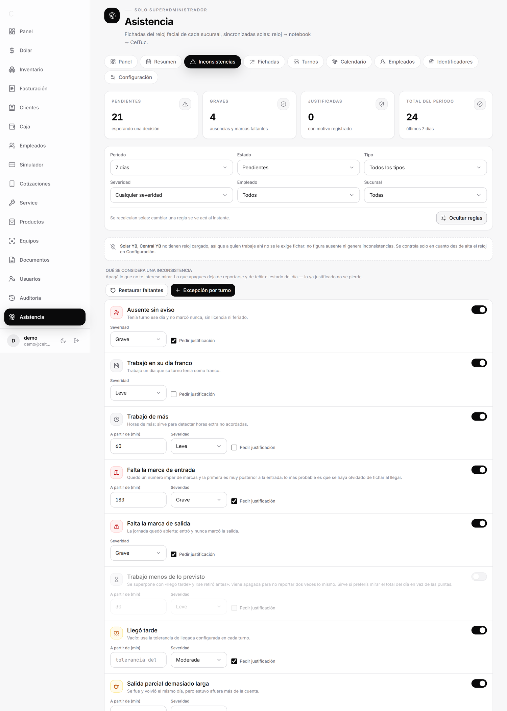
Si desactivás «llegó tarde», el día tampoco queda pintado como Llegó tarde: pasa a Presente. Un interruptor que apaga el reporte pero deja el cartel no serviría de nada.
La pestaña Inconsistencias junta todo lo que pide una mirada: llegadas tarde, marcas faltantes, ausencias, salidas largas.
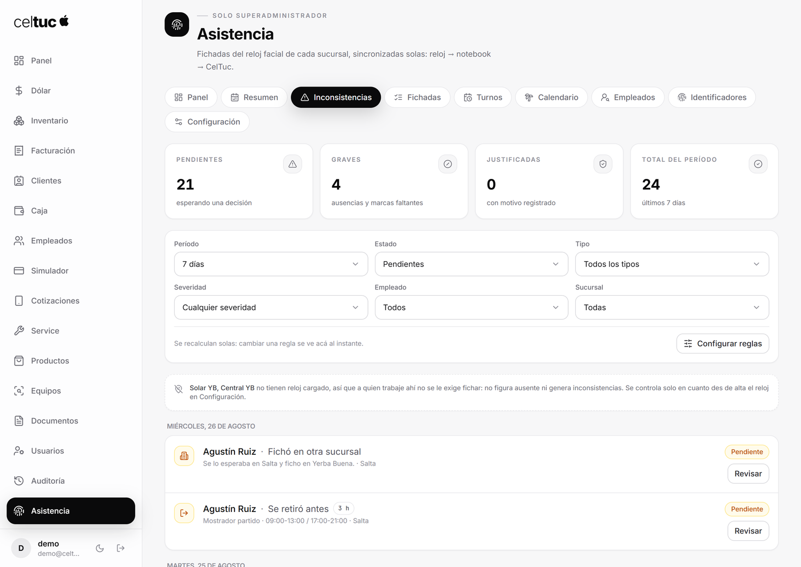
Cada una se revisa con un motivo, que queda en el historial con el nombre de quien la resolvió:
Asistencia ▸ Empleados. Elegís a alguien y ves todo lo suyo: por día, por semana, por mes o por año, navegando con las flechas.
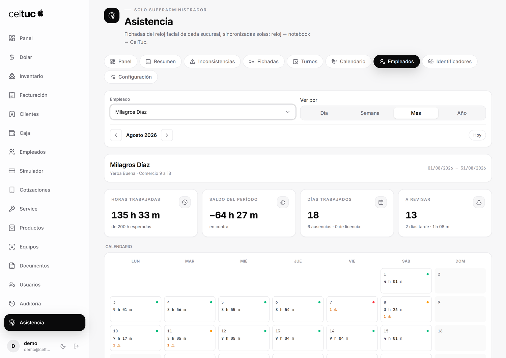
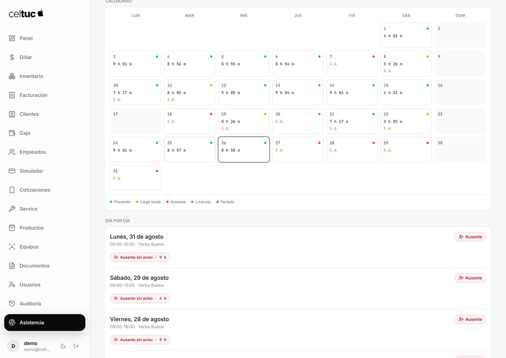
Los problemas que aparecen de verdad, y qué mirar en cada caso.
| Qué ves | Qué está pasando y qué hacer |
|---|---|
| «Asistencia» no aparece en el menú | Estás con un usuario que no es superadministrador. Todo el módulo es exclusivo del superadmin. |
| El reloj no ve el Wi-Fi | Casi siempre es que la red es de 5 GHz. Verificá en el router que la banda de 2,4 GHz esté habilitada y con nombre propio. |
| «Notebook apagada» en el Panel | El agente no está reportando. Verificá que la notebook esté prendida y con Internet, y mirá el log (Anexo C). Si se suspendió, revisá las opciones de energía. |
| «Reloj sin conexión» | La notebook llega a CelTuc pero no al reloj. Suele ser que la IP cambió: si no hiciste la reserva DHCP del paso 5, es exactamente esto. Mirá la IP actual en el reloj y corregila en Configuración, o mejor, reservala. |
| «El reloj bloqueó el acceso por intentos fallidos» | Es la protección antifuerza-bruta del equipo, no una contraseña mal puesta. El mensaje dice cuántos minutos faltan. No insistas: cada intento durante el bloqueo reinicia el contador. El agente ya espera solo el tiempo correcto. |
| Fichadas que no aparecen | Mirá «Pendientes» en el Panel. Si es mayor que cero y no baja, la notebook no está llegando a CelTuc: revisá Internet en la sucursal. |
| Fichadas «sin asignar» | Ese identificador del reloj todavía no está vinculado a un empleado. Andá a Identificadores y asignalo: las fichadas viejas se corrigen solas. |
| Todo el equipo figura ausente un día | Era feriado y no estaba cargado. Cargalo en Calendario y el día se recalcula al instante. |
| Alguien figura ausente y estuvo trabajando | Puede ser que ese día le tocara otra sucursal. Cargalo en «Dónde trabaja cada uno» y el sistema deja de reclamarlo. |
| El instalador dice «archivo en uso» | Ya había un agente corriendo. Stop-ScheduledTask -TaskName "CelTuc Hikvision Agent" y volvé a correrlo. |
Todos en PowerShell como Administrador.
# Ver si el servicio está corriendo PS> Get-ScheduledTask -TaskName "CelTuc Hikvision Agent" # Ver las últimas líneas del log (lo primero que hay que mirar) PS> Get-Content C:\ProgramData\CelTuc\HikvisionAgent\logs\agent.log -Tail 40 # Frenarlo y arrancarlo PS> Stop-ScheduledTask -TaskName "CelTuc Hikvision Agent" PS> Start-ScheduledTask -TaskName "CelTuc Hikvision Agent" # Probar la conexión con el reloj PS> & 'C:\Program Files\CelTuc\HikvisionAgent\hikvision-agent.exe' diag # Volver a cargar la contraseña del reloj (si la cambiaste) PS> & 'C:\Program Files\CelTuc\HikvisionAgent\hikvision-agent.exe' secrets set
La IP del reloj, cada cuánto consulta, cuántos días recupera: todo eso se edita en Asistencia ▸ Configuración y el agente lo toma solo en menos de un minuto. No hace falta volver a la sucursal ni tocar la notebook. Lo único que vive únicamente ahí es la contraseña del reloj.
Completala a mano durante la instalación. Después pasala a un lugar seguro.
| N.º en el reloj | Nombre cargado en el reloj | Empleado en CelTuc | ¿Vinculado? |
|---|---|---|---|
Las capturas de este manual son de una sucursal de ejemplo con datos de prueba. Los menús del reloj pueden variar levemente según la versión de firmware; si un nombre no coincide exactamente, buscá la opción equivalente en el mismo submenú. · ScriptHouse · CelTuc Asistencia · agosto 2026